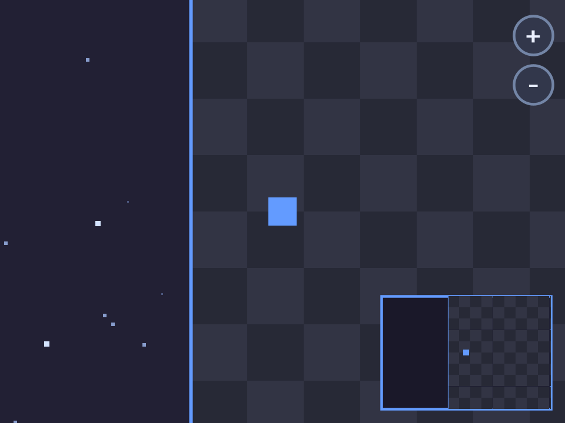

flix_ge_camera / flix_game_engine
星空に浮かぶアリーナの上で四角い箱（box。このページの主役）を動かすと、 カメラが少し遅れて追いかけ、床と二層の星が違う速さで流れ、端まで行くとカメラだけが止まる。 ＋/− ボタンで滑らかに寄り引きし、引き切るとアリーナの全景になる — ページ内のデモで実際に触れます。 本物のゲームの画面右下にはさらに小窓（PiP）があって、 プレイヤー周辺の絵が縮小されて映ります（デモの右下でも動きます。しくみはその6）。 この全部を作っているのは、ゲーム側に書いた「箱を追いかける」小さな計算と 設定の数行だけ。残りの共通の仕事はエンジンが裏で引き受けています。 それがどう動いているのか、実際のコードと図を1行ずつ対比しながら解説します。
以降の解説で繰り返し出てくる言葉を先にまとめます。特に dt はすべての計算に登場します。 ゲームを作ったことがあれば既知のはずなので、次のセクションへ 飛ばして構いません。
{ x, y } です。
cam が右へ動けば、切り取り窓が右へずれるので、映っている物は左へ流れて見えます。
なぜそう見えるのか・裏で何が起きているのかは、すぐ次のセクションで。
a + (b − a) × t。
t = 0 なら a のまま、t = 1 なら b に一致、t = 0.1 なら「a から b へ 10% だけ近づいた点」。
毎フレームこれを繰り返すと「残り距離の一定割合ずつ詰める」なめらかな追従になります。
2D ゲームのカメラには、レンズも本体もありません。実体は 「world のどの点を画面中央に映すか」の座標1つ（cam）と、 「どこまで寄るか」の倍率1つ（zoom）だけ。 カメラと呼べる物は、この2つの値のほかに存在しません。
では cam が動くと、何が起きているのか。画面（枠）そのものは1ミリも動かせないので、 「カメラが動く」は実は錯覚です。本当に起きているのは 「描く物すべてを反対方向にずらす」こと — 停車中の電車で、隣の電車が動くと自分が動いた気がするのと同じで、 枠が固定でも世界側を逆にずらせば「視点が動いた」ように見えます。
screen = world − cam + 中央
（ズームも入れた完全形は (world − cam) × zoom + 中央。中央 = 画面サイズ/2）。
この「ずらし」を含めて、エンジンが毎フレーム絵を描く直前にやり直している仕事を 順に並べるとこうなります。
ゲームと同じロジック（速度 120px/秒・追従率 5.0・32px タイル・カメラ境界・二層の星空・ 右下の PiP ミニビューポート）を JavaScript で再現したものです。「カメラ追従」を切ると、同じ入力でも box がすぐ画面外へ出てしまうことが分かります。
キャンバスをクリックしてから ↑↓←→（または WASD）で移動。 右上の ＋/− で寄り引き。端まで歩くとリング（アリーナの縁の枠）の向こうに 星の余白が見えてカメラが止まり（⛔限界 が readout に出る）、 −を押し切るとアリーナが星空に浮かぶ全景になる。 縁に沿って歩くと星が床よりゆっくり流れる＝視差。 右下の小窓（PiP）は自分を中心にした縮小ビューで、溢れた絵は窓の縁でスパッと切れる （しくみはその6）。
ここからコードを読んでいきます。このページのコードは Flix （JVM で動く関数型言語）です。見慣れない文法も、 「TypeScript ならこう書くやつ」と対にすればほとんどそのまま読めます。 上段が TypeScript・下段が Flix の対比で押さえましょう。
world#x フィールド参照は #// TypeScript ならこう world.x; world.cam.x; // Flix はこう world#x; world#cam#x読み方は同じ「world の中の x」。
. の代わりに # なだけで、連鎖もできる。
{ x = nx | world } レコード更新// TypeScript ならこう（スプレッドで「残りはコピー」） const next = { ...world, x: nx }; // Flix はこう（| の右が土台） let next = { x = nx | world };意味も同じ「x だけ差し替えて残りは world のまま」。値は不変なので、
World.step は毎フレームこれで新しい World を作る
（丸ごとコピーではなく、変わらない部分は共有される。毎フレーム作っても軽い）。
type alias World = { … } 構造的レコード型// TypeScript ならこう（TS も形で型が決まる） type World = { x: number; cam: Vec2 }; // Flix はこう type alias World = { x = Float64, cam = Vec2.Vec2 }「名前でなく形が同じなら同じ型」は TS と同じ感覚で読める。 違いは、クラス定義がそもそも存在しないこと。
f(center, design = d) 名前渡し引数// TypeScript ならこう（named args が無いのでオブジェクトで代用） centerOn(center, { zoom: z, design: d }, items); // Flix はこう（ラベルが言語機能） CameraRig.centerOn(center, zoom = z, design = d, items)実体は「1ラベルのレコードで包む」糖衣 — TS の代用テクがそのまま言語公式になった形。 同じ型（Vec2 同士など）の引数が並んでも、位置でなくラベルで区別できる。
|> パイプ演算子// TypeScript ならこう（メソッドチェーン。ただしクラスに // メソッドとして生やした関数しか繋げない） App.makeWith(init).addSystem(step).launch(); // Flix はこう（ただの関数を何でも繋げる） App.makeWith(init) |> App.addSystem(step) |> App.launch
x |> f は f(x)。読み味はメソッドチェーンと同じだが、
クラス定義に手を入れずに任意の関数を挟める（TS では TC39 提案止まりの機能）。
Main.flix のビルダー連結はこれ。
def speed(): Float64 = 120.0 定数も0引数関数// TypeScript ならこう（モジュール直下に変数を置ける） const SPEED = 120; world.x + SPEED * dt; // Flix はこう（トップレベル変数が無い → 引数なしの関数） pub def speed(): Float64 = 120.0 world#x + speed() * dt呼ぶ側にも
() が付くのが目印。
\ IO 効果システム（Flix の看板機能）// TypeScript ではこの保証が書けない — 型は「純粋」を約束しない function step(w: World): World { fetch("https://…"); // 型には何の痕跡も残らない return { ...w, x: w.x + 1 }; } // Flix — 何も書かなければ純粋だとコンパイラが保証 pub def step(input: Input, dt: Float64, world: World): World = … def main(): Unit \ IO = … // 外に触れるなら \ IO と書くしかない一番 TS に無いもの。「async が signature に現れる」感覚の一般化で、World.step や View.frame が純粋なのは規約ではなく型。main だけが
run { … } with … で
窓・時計・描画の副作用を引き受ける（with は「IO を実際に誰がやるか」の
実装を差し込む構文。DI コンテナに近い）。
forM (…) yield for 内包（いわゆるモナド内包）// TypeScript ならこう（flatMap + map の入れ子） rows.flatMap(r => cols.map(c => tile(c, r))); // Flix はこう（Scala の for 内包表記と同じ） forM (r <- rows; c <- cols) yield tile(c, r)二重ループのリスト生成。flatMap を持つ型なら何にでも使える糖衣 （この仕組みの名前が「モナド」）。その3の背景タイルで登場する。
x :: xs・xs ::: ys・Nil リストの組み立て// TypeScript ならこう（スプレッドで連結） const items = [...background(v), player(w)]; // Flix はこう（:: は先頭に1つ足す・::: は連結・Nil は []） background(v) ::: player(w) :: NilList は配列ではなく連結リストで、先頭に足すのが基本操作。 その2の View.frame がこの形で「絵の列」を組む。
Option・Some・None 「無いかもしれない」値// TypeScript ならこう（null で「無い」を表す） function starAt(…): Star | null { … } // Flix はこう（null は無い。Option 型で包む） def starAt(…): Option[Star] = if (…) None else Some(star)
T | null 相当。「無い」も普通の値なので、チェック漏れがコンパイルで落ちる。
その5の星撒きで登場する。
w -> w#zoom ラムダ（無名関数）// TypeScript ならこう (w) => w.zoom; // Flix はこう（=> でなく ->。_ は「引数を使わない」） w -> w#zoom _ -> World.cameraBounds()矢印が1本違うだけ。Main.flix が
withZoom や
withCameraBounds に渡している小さな関数がこれ。
Main.flix は App.addSystem(Controls.step)・App.withView(View.frame) と
「何を呼んでほしいか」を宣言しているだけで、渡した関数はエンジンが毎フレームこの順で呼びます
（Controls.step の中で inputOf → World.step と繋がる）。
状態は World というただのレコードで、毎フレーム
「入力で次の World を作る → World を絵に写す」の繰り返し。
「そもそもカメラとは」で見た4つの仕事は、
最後の「絵に写す」の内部で起きていることです。
World には box の位置 x, y と、カメラの中心 cam が入っています。
box とカメラを別々の速さで動かすのがポイントです。
// 追従仕様: deadzone = 不感帯の幅, k = 1秒あたりの寄せ率
pub def follow(): CameraRig.Follow =
{ deadzone = 0.0, k = 5.0 } 2
pub def step(input, dt, world): World =
let nx = world#x + input#x * speed() * dt; 1
let ny = world#y + input#y * speed() * dt;
let cam = world#cam;
{ x = nx, y = ny,
cam = { x = cam#x + CameraRig.followDelta( 3
follow(), dt, nx, cam#x),
y = cam#y + CameraRig.followDelta(
follow(), dt, ny, cam#y) }
| world }
// エンジン側（CameraRig.followDelta）。deadzone=0 なら実質:
// (target − current) × min(1, k×dt) ← lerp そのもの速度 120px/秒 × dt だけ進む。CameraRig（カメラ計算の道具箱モジュール）に
Follow として宣言する。k × dt ≒ 1フレームで詰める割合（60fps なら約 8%。
Godot の Camera2D position_smoothing_speed と同じ役どころ）。内部の min(1, k×dt) は
処理落ちで dt が大きくなっても行き過ぎない安全弁。followDelta は「残りの距離 × min(1, k×dt)」の移動量を返す —
deadzone = 0 なら cam + (box − cam) × t の lerp そのもの。
残り距離に比例して詰めるので、離れるほど速く・近づくほどゆっくり追いつく。
キーを離すと box が止まり、cam だけが寄っていくので box は画面中央へ戻る。
deadzone を広げると「帯の中ではカメラを動かさない」遊びも作れる
（Godot の drag margin 相当）。
エンジンの App.withCamera を使うと、ゲームは
「world のどこを画面中央に映したいか」を1行で宣言するだけで、
すべての描画物の置き場所から cam を引いて画面中央へずらす仕事はエンジンが引き受けます。
View は world 座標のまま絵を組むだけです。
// Main.flix — App にカメラを1行で繋ぐ
App.makeWith(World.initial)
|> App.addSystem(Controls.step)
|> App.withView(View.frame)
|> App.withCamera(View.cameraCenter) 1
|> App.launch
// View.flix — 変換コードは無い。world 座標で組むだけ。
// ctx（App.ViewCtx）から「見えている範囲」も貰える
pub def cameraCenter(world): Vec2.Vec2 = world#cam
pub def frame(ctx: App.ViewCtx, world): List[Render.PlacedItem] = 2
background(ctx#visible) ::: player(world) :: Nil
// エンジン側（CameraRig.centerOn）。やっていることは:
// screen = world − cam + 画面サイズ/2 3withCamera に渡すのは「World → 画面中央に映したい world 座標」の純粋関数。
World の cam を返すだけ。withHudView に繋いだ絵だけはずらされない。Godot の CanvasLayer、
Unity の Screen Space Canvas 相当）。screen = world − cam + 画面サイズ/2 の引き算1つ。
cam が右へ 10 動くと、すべての screen 座標が左へ 10 ずれる — これが「背景が逆方向に流れる」理由。
市松模様はどこかに保存されていません。カメラ位置から「いま画面に映るタイル番号」を 割り出して、その場で並べ直しているだけです。だからどこまで移動しても途切れません。
// 「見えている矩形」は frame が ctx#visible として受け取り、
// そのまま渡ってくる。cam も design もこの関数は知らない
def background(visible: Rect2.Rect2): List[Render.PlacedItem] =
let ts = tileSize(); // 32px。tileIndex ≒ floor（切り下げて整数のタイル番号に）
let col0 = tileIndex(visible#position#x / ts); 1
let row0 = tileIndex(visible#position#y / ts);
let cols = tileIndex(visible#size#x / ts) + 2; 2
let rows = tileIndex(visible#size#y / ts) + 2;
// List はモナドなので forM がリスト内包として使える（行×列の総当たり）
forM (r <- List.range(0, rows); c <- List.range(0, cols))
yield tile(col0 + c, row0 + r)
// 市松の1枚（タイル番号 → world 座標の PlacedItem）
def tile(col: Int32, row: Int32): Render.PlacedItem =
let ts = tileSize();
let color = if (Int32.modulo(col + row, 2) == 0) 3
tileColorA() else tileColorB();
{ at = { x = Int32.toFloat64(col) * ts, … }, 4
item = Render.box(…) }visible は「cam を中央に映したとき画面に見える world の矩形」
（左上 = cam − design/2、大きさ = design）。エンジンが計算して ViewCtx で渡してくる。
その左上をタイル辺 32 で割って床関数に通すと「左端が乗っているタイルの番号」になる。+2 枚の余白を持たせる。(col + row) が偶数かで2色を交互に。番号は world に固定なので、
カメラが動いても模様は地面に貼り付いたままになる。タイル番号 × 32 の world 座標。あとは その2 の一括変換が画面に映してくれる。
Int32.modulo なのか:
左や上へ進むとタイル番号は負になります（… −2, −1, 0, 1 …）。
多くの言語の %（剰余）は -3 % 2 == -1 を返すので「== 0 か否か」の交互パターンが
負の側で崩れますが、Flix の Int32.modulo は常に 0 か 1 を返すため、
原点をまたいでも市松が乱れません。
右上の ＋/− ボタンをクリックすると寄り引きできます。仕掛けはこう: ボタンは目標値を1段動かすだけ、現在値は毎フレーム目標へ lerp （カメラ追従と同じ手口）、エンジンは引き算の式に × zoom を1つ足して 大きさも一緒に伸縮します。
// Controls.flix — クリック判定。エンジンの Frame には
// cursor（screen 座標）と mouseClicked（押した瞬間だけ true）が焼かれている
pub def zoomButtons(frame, world) =
let overPlus = Hud.inCircle( 1
Hud.plusCenter(frame#viewport), frame#cursor);
...
if (frame#mouseClicked and overPlus) 2
World.zoomIn(hovered) ...
// World.flix — ボタンは目標値を1段変えるだけ
pub def zoomIn(world) =
{ zoomTarget = clamp(world#zoomTarget * 1.25) | world }
// World.step — 現在値が目標へ lerp（追従カメラと同じ）
zoom = world#zoom + (world#zoomTarget - world#zoom) 3
* min(1.0, 8.0 * dt)
// Main.flix — エンジンへは宣言1行ずつ
|> App.withZoom(w -> w#zoom)
|> App.withHudView(View.hud) // +/− ボタンの絵（画面固定）
// エンジン側（composeScene）。その2の式に ×zoom が入るだけ:
// screen = (world − cam) × zoom + 画面サイズ/2 4
// 大きさも × zoom、見えている範囲は design / zoomframe#cursor（screen 座標）をそのまま比べられる。mouseClicked は押した瞬間だけ true。
押しっぱなしでは false のままなので、連打にならない。zoomTarget だけで、実際の
zoom は毎フレーム目標へ lerp — カメラ追従とまったく同じ手口なので、
カチッと切り替わらずぬるっと寄る。ctx#visible（見えている範囲）も design/zoom に狭まるので、
背景タイルの敷き詰めは何も変えずにズームに追従する。
CameraRig.safeZoom があり、0 以下・NaN・Infinity のような
不正な倍率は安全な範囲（0.01〜1000）へ丸められる — 1.0 / 距離 のような
うっかりゼロ除算でも画面が壊れない（ゲーム側の事前検査は不要）。
② 逆変換 toWorldPos（screen → world = (screen − 中央) ÷ zoom + cam）もあり、
定番の「ズーム中に world の物をクリックする」が正しく書ける。
順変換で screen へ移した点を逆変換に通すと元の world 座標へ戻ることは
エンジンのテストが保証している。
仕上げの2機能です。境界（withCameraBounds）は 「映してよい world の矩形」の宣言で、視界の縁がそこを出ないようカメラが止まる （Godot の Camera2D limits、Unity の Cinemachine Confiner 相当）。 視差（addParallaxLayer）はカメラの動きに factor を掛けた速さで流れる 背景レイヤ（Godot の ParallaxLayer motion_scale 相当）。 ゲーム側の追加はどちらも Main の宣言だけです。
// Main.flix — 3行足すだけ
|> App.withCameraBounds(_ -> World.cameraBounds()) 1
|> App.addParallaxLayer(0.25, View.farStars)
|> App.addParallaxLayer(0.55, View.nearStars) 2
// World.flix — 映してよい範囲 = アリーナ + 星空の余白
pub def cameraBounds(): Rect2.Rect2 =
let a = arena();
let m = 128.0; // ← 余白ゼロだと星が一生映らない 3
{ position = { x = a#position#x - m, … },
size = { x = a#size#x + 2.0 * m, … } }
// View.flix — 星はセル番号のハッシュで「決定的に」撒く
def starAt(col, row, …): Option[Render.PlacedItem] =
let idx = col * 92821 + row * 31 + salt;
if (Hash01.at(idx, 0) > 0.5) None 4
else Some(セル内の位置・明るさもハッシュで決めた星)
// エンジン側の芯（どちらも純関数）:
// clampCenter: 視界(design/zoom)が bounds を出ない位置へ center を収める
// parallaxCenter: lerp(画面中央, center, factor) — 遠いほど動きが小さいctx#visible も
見かけのカメラで計算されるので、画面外を描かない間引き（culling）は
その3のタイル敷き詰めと同じに書ける。本物のゲームの画面右下には小窓（PiP = Picture in Picture）があり、 プレイヤー周辺の world がそのまま縮小されて映っています — 上の再現デモの右下でも同じものが動いているので、動かしながら読めます。 専用のミニマップ画像はどこにもありません。 「そもそもカメラとは」で見たとおりカメラの正体は座標変換なので、 メイン画面と同じ描画部品の列に、もう1つ別の変換（プレイヤー中心・0.2倍）を 掛け直せば、それだけで「2台目のカメラ」になります。 本物と同じ部品を映すので、地図と実物が食い違う事故も起きません。
ただし新しい問題が1つ。窓が見る world は 480×320、アリーナは 1024×768 なので、
縮小した中身は必ず窓から溢れます。
その3では溢れを「描く前に選別する」
（見えるタイルだけ組む = culling）ことで解決しましたが、タイルは 32px 単位でしか
増減できないので、窓の縁「ぴったり」の始末はこの手では作れません。
そこで出番なのがエンジン v0.4.0 の新機能 clip
（Render.clipped / Render.clippedAll）—
「描いてから、指定した矩形の縁でピクセルを切り落とす」道具です。
選別は「描く量を減らす節約」、clip は「縁の正確な始末」。役割の違う2つを重ねて使います。
// 窓: 画面右下 96×64。0.2倍 → world 480×320 が見える
def pipScale(): Float64 = 0.2
// PiP 一式 = 下地（額縁）+ 窓で切り抜いた中身
def pip(design, world): List[Render.PlacedItem] =
let r = pipRect(design); // 右下の窓の矩形
let backdrop = 虚空色の箱 |> Render.outline(…); 4
backdrop :: Render.clippedAll(r, pipContent(r, world)) 3
// 中身: 同じ部品の列に、もう一度別の変換を掛ける
def pipContent(r, world): List[Render.PlacedItem] =
let s = pipScale();
let winCenter = 窓の中心;
let playerPos = { x = world#x, y = world#y };
let items = background(worldView) 1
::: rim() :: player(world) :: Nil;
items |> List.map(p ->
{ at = Vec2.add(winCenter, 2
Vec2.mul(Vec2.sub(p#at, playerPos), s)),
item = p#item |> Render.scaled(s)
|> Render.raiseZ(pipLift()) })
// その2の式: screen = (world − cam) × zoom + 画面中央
// PiP の式: screen = (world − player) × 0.2 + 窓の中心
// — 中心とずらし先が違うだけの、同じ変換
make bake が焼いたスクリーンショット）。アリーナの左端に立つと、
PiP の中の縮小タイルも窓の途中でスパッと途切れて虚空に変わる — これが clip の切り口。background（その3）・縁取りの rim・player。
worldView は「窓が見る world 480×320」で、タイルの選別もその3のまま再利用。窓の中心 + (world − player位置) × 0.2。
その2の world − cam + 画面中央 と見比べると、
中心にする点とずらし先が変わっただけの同じ引き算。
大きさも Render.scaled で同じ倍率に縮める（その4の ×zoom と同じ役）。Render.clippedAll(r, …) が窓の矩形 r の縁で
ピクセルを切り落とす。毎フレームの分担はこの4つ:
(world − cam) × zoom + 中央 で
全描画物をずらして伸縮する（HUD は素通し）境界と視差も同じ流儀で、World は何も知らず Main の宣言だけが増える。 PiP（その6）も World には触れず、View が同じ部品にもう1つの変換を掛けて clip で切るだけ。 カメラという特別なオブジェクトは存在せず、World の中の座標2つと倍率1つ、宣言数行だけで 「追いかけ・止まり・寄り引きし・奥行きが出る」カメラ一式が動いています。 追従もズームも同じ lerp の手口なのがミソです。